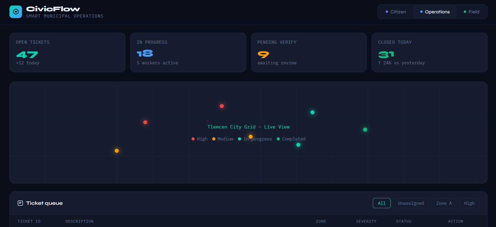
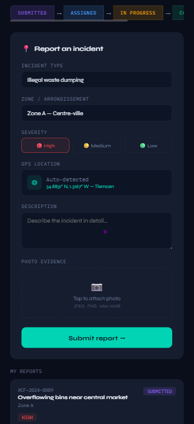
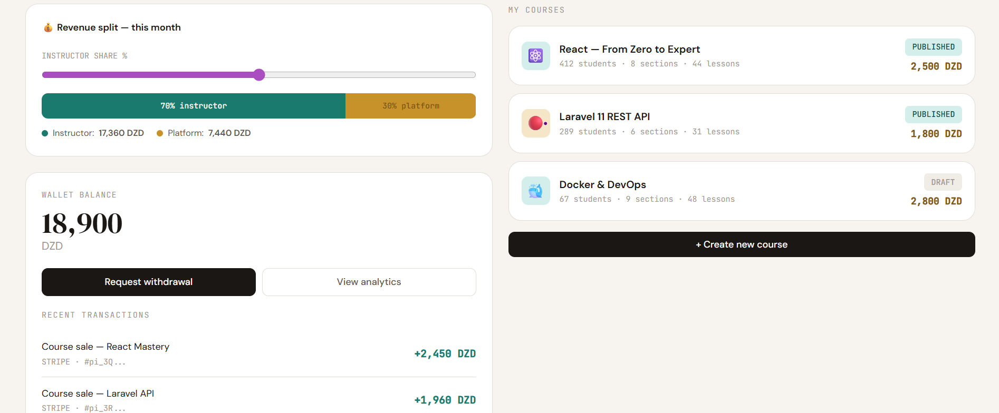
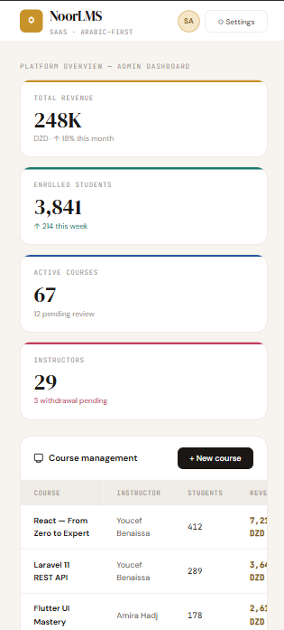

// Case Studies
Systems I've
Architected
Each project below is documented as a full case study — from the problem that required a system, to the architecture decisions that shaped the solution.
01
// Urban Logistics Ecosystem
CivicFlow
Smart Waste Management & Municipal Operations Platform
The Problem
Algerian municipalities manage waste operations through fragmented channels — phone calls, paper reports, manual coordination. There's no closed-loop accountability between citizens reporting issues, managers dispatching workers, and workers proving completion.
The Architecture Decision
Instead of a single app, I designed a 3-tier operational ecosystem with separate interfaces for each stakeholder, unified by a shared real-time data layer and a state machine tracking every report through 5 distinct statuses — with zero data loss, even offline.
The 3-Layer System
CITIZEN LAYER — Report Interface
Geo-tagged incident reporting with photo evidence. Transforms unstructured civic complaints into structured logistics tickets.
OPERATIONS LAYER — Municipality Dashboard
Real-time task management — ticket queuing by zone, worker assignment, priority escalation, and live status tracking.
FIELD LAYER — Worker Mobile Interface
GPS check-in, photo proof-of-completion, and task status updates. Creates an auditable chain of accountability.
The Engineering Challenge
Designing a state machine where a single report travels through 5 statuses across 3 independent actors — Submitted → Assigned → In Progress → Completed → Verified — with no state ever lost, even in offline-first mobile scenarios.
The Outcome
A closed-loop logistics system that transforms unstructured citizen complaints into verified, completed field operations with a full audit trail.

Municipality Dashboard
Add civicflow-dashboard.png
Add civicflow-dashboard.png

Citizen
Report
Report
// civicflow-dashboard.png + civicflow-report1.png → /images/
Tech Stack
FlutterLaravelFirebase AuthFirestoreOpenStreetMapREST APIState MachineOffline-First
02
// EdTech Infrastructure
SaaS Learning Platform
Multi-Role LMS with Revenue Architecture
The Problem
Existing LMS solutions in the Arab market either lack Arabic support or can't scale beyond a single institution. Educators needed a platform they could own and monetize — with real SaaS architecture under the hood.
The Architecture Decision
Built on Clean Architecture with DDD patterns — 18-table schema, 10 bounded contexts, 3 roles (Admin, Instructor, Student). An architecture with clear domain boundaries that scales horizontally into multi-tenancy.
Core Systems Built
COURSE ENGINE
Structured content delivery with section/lesson hierarchy, progress tracking, and completion certificates via DomPDF.
QUIZ ENGINE
Auto-graded assessments with configurable scoring, time limits, and attempt tracking.
REVENUE ARCHITECTURE
Stripe payments with instructor revenue split, webhook handling, wallet system, and withdrawal requests.
ANALYTICS LAYER
Redis-cached dashboards with enrollment metrics, revenue analytics, and engagement tracking per instructor.
The Engineering Challenge
Designing a revenue-split system that correctly calculates instructor share vs. platform commission, handles Stripe webhook idempotency, and processes refund reversals — without creating a financial inconsistency in the wallet ledger.

Filament Admin Panel
Add lms-admin.png
Add lms-admin.png

Flutter
Student
Student
// lms-admin.png + lms-admin1.png → /images/
Tech Stack
Laravel 11Clean ArchitectureFilament v3FlutterStripeRedisMySQLLaravel SanctumDomPDF
03
// Commerce Infrastructure
E-Commerce Suite
Full-Scale Laravel Platform with Comprehensive Admin Intelligence
The Problem
Most e-commerce solutions for Algerian businesses are either cheap templates with no extensibility, or expensive foreign platforms that don't understand local payment methods, currency, or Arabic product catalogs.
The Architecture Decision
Built from scratch on Laravel to own every layer — custom admin dashboard, inventory management, order lifecycle, and analytics. A domain-specific commerce engine built for the Algerian market.
Key Systems
PRODUCT CATALOG ENGINE
Multi-variant products, category tree, inventory tracking with low-stock alerts.
ORDER LIFECYCLE
Full order state management from cart to delivery, with admin override capabilities.
ADMIN INTELLIGENCE LAYER
Comprehensive dashboard with sales analytics, customer behavior, top products, and revenue trends.
The Outcome
A production-ready commerce platform with full Arabic support, RTL layouts, and an admin dashboard that gives business owners real visibility into their operations.

Admin Dashboard
Add ecommerce-admin.png
Add ecommerce-admin.png

Product
Catalog
Catalog
// ecommerce-admin.png + ecommerce-mobile.png → /images/
Tech Stack
LaravelTailwind CSSMySQLAlpine.jsLaravel LivewireRTL Supporti18n
Building in Public — Phase 5 of 6
04
// AI Productivity System
MindPilot
An AI-powered productivity ecosystem — built, shipped, and documented in public
The Vision
MindPilot is not a to-do list. It's a cognitive productivity system that uses AI to help knowledge workers — particularly in the Arab world — think clearer, prioritize better, and build with more intention.
Current Progress
✓Phase 1 — Architecture & Core API
✓Phase 2 — Auth & User System
✓Phase 3 — Core Features & LLM Integration
✓Phase 4 — Admin Panel & Analytics
→Phase 5 — Flutter Mobile App (Active)
○Phase 6 — SaaS & Scaling Layer

MindPilot AI Dashboard
Add mindpilot-dashboard.png
Add mindpilot-dashboard.png

Flutter
Mobile
Mobile
// mindpilot-dashboard.png + mindpilot-mobile.png → /images/
Tech Stack
Laravel 11
Flutter
Filament v3
AI/LLM
Sanctum
Redis
Clean Architecture
In Development
05
// Restaurant Tech · Micro-SaaS
Menu-to-Order
QR-Based Ordering System for Restaurants — Zero Friction, Real-Time Operations
The Problem
Algerian restaurants still take orders via pen and paper or shouted across the room. Waiters get overwhelmed, orders get wrong, and there's no data on what sells. No digital bridge exists between the customer's table and the kitchen.
The Architecture Decision
A 3-actor micro-SaaS — customer scans QR at the table, browses the digital menu, and places order directly. The restaurant dashboard receives it in real-time. The kitchen gets a live ticket. No app install required for customers.
The 3-Actor System
CUSTOMER — QR Scan & Order
Scan QR code at the table → browse full digital menu → place order directly from phone. No app install, no login required.
RESTAURANT — Live Dashboard
Real-time order management, table overview, menu editor, and daily sales analytics — all in one dashboard.
KITCHEN — Order Ticket System
Live order queue for kitchen staff — new orders appear instantly, items can be marked ready, reducing miscommunication to zero.
The Engineering Challenge
Building a real-time order pipeline that works reliably in restaurants with poor WiFi — using optimistic UI updates, background sync, and a conflict-resolution layer when multiple customers order simultaneously from the same table.
The Business Model
Micro-SaaS subscription per restaurant — flat monthly fee, no per-order commission. Simple enough to sell, valuable enough to keep. Target: restaurants, cafés, and food courts across Algeria.

Restaurant Dashboard
Building in Progress…
Building in Progress…

QR Menu
Customer View
Customer View
// Screenshots will appear as development progresses
Tech Stack
Laravel
Flutter
QR Code
WebSockets
Filament v3
MySQL
Real-time